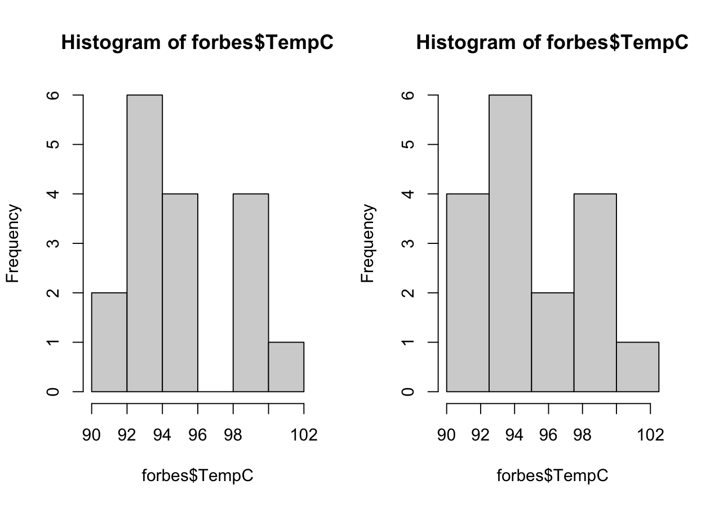
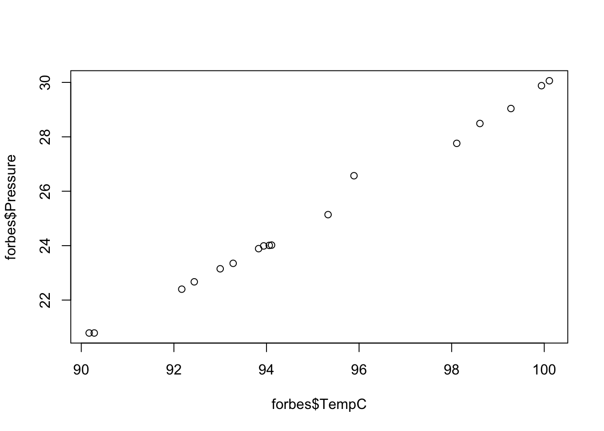
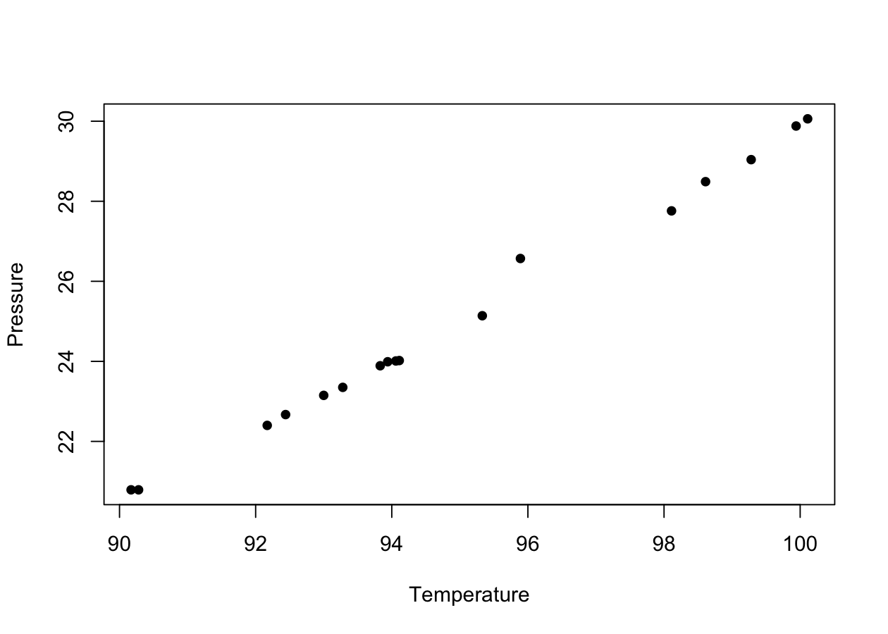
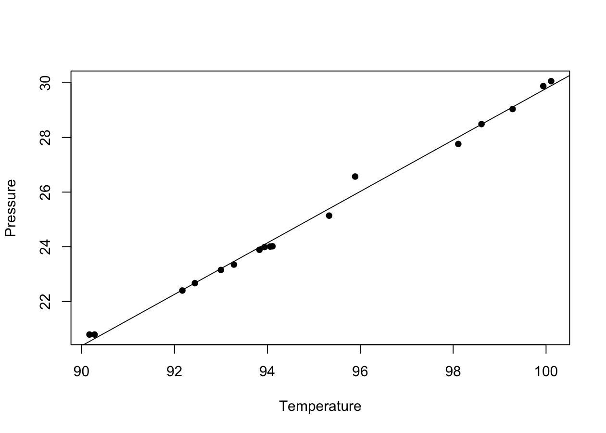

forbes <- read.table("data/forbes.csv", header = TRUE, sep = ",")Descriptive analysis of the forbes data
Programming and Data Analysis with R
Homepage
Topics covered
- Covariance and correlation
- The simple linear regression model
- Least squares and goodness of fit
Description of the problem
For n = 17 locations in the Alps, the atmospheric pressure (inHg, that is “inches of mercury”) and the boiling temperature of water (in degrees Fahrenheit) are measured.
The data come from an experiment carried out by the Scottish physicist Forbes in 1857.
Forbes was interested in estimating the altitude through the pressure. However, at the time the barometer was a heavy and expensive instrument.
In the mountains water boils at a different temperature, so that one can try to estimate the pressure starting from the boiling temperature.
Importing the forbes data
As done previously, first of all you need to download the file forbes.csv and save it on your computer. Link to the file
Alternatively, we can simply obtain them using the link:
path <- "https://tommasorigon.github.io/EnvEcoStat/data/forbes.csv"
forbes <- read.table(path, header = TRUE, sep = ",")str(forbes)'data.frame': 17 obs. of 2 variables:
$ bp : num 194 194 198 198 199 ...
$ pres: num 20.8 20.8 22.4 22.7 23.1 ...Preliminary operations
For interpretative reasons, we convert the temperature from degrees Fahrenheit to degrees Celsius, recalling that
(\text{``Fahrenheit''}) = 32 + \frac{9}{5}(\text{``Celsius''}).
colnames(forbes) <- c("TempF", "Pressure") # Change the names of the variables
forbes$TempC <- round((forbes$TempF - 32) * 5 / 9, 2) # From Fahrenheit to Celsius
summary(forbes) TempF Pressure TempC
Min. :194.3 Min. :20.79 Min. : 90.17
1st Qu.:199.4 1st Qu.:23.15 1st Qu.: 93.00
Median :201.3 Median :24.01 Median : 94.06
Mean :203.0 Mean :25.06 Mean : 94.97
3rd Qu.:208.6 3rd Qu.:27.76 3rd Qu.: 98.11
Max. :212.2 Max. :30.06 Max. :100.11 Why do we round the values using round? For aesthetic reasons only.
Histogram
Solution
We can decide to specify the intervals of the classes ourselves, or to leave this choice to R.
par(mfrow = c(1, 2)) # Split the graphical window into 2 parts
# Option 1, for a total of 6 equally spaced classes
hist(forbes$TempC) # Equivalent to: hist(forbes$TempC, breaks = "sturges")
# Option 2, we define manually 5 equally spaced classes
breaks <- c(90, 92.5, 95, 97.5, 100, 102.5)
hist(forbes$TempC, breaks = breaks)
The solution on the left uses 6 classes. The one on the right uses 5 classes.
Location indices
Solution
We have already computed the means through the command summary; for completeness:
# First part of the question
mean(forbes$TempC)[1] 94.97353mean(forbes$Pressure)[1] 25.05882# Second part of the question
32 + 9 / 5 * mean(forbes$TempC) # Using the properties of the mean[1] 202.9524mean(forbes$TempF) # Not required: computes the mean from the original data[1] 202.9529Variability indices
Solution
Since it will turn out to be useful later, we define the function my_var that computes the variance.
# Yes, the function is defined on a single line and there is nothing wrong with it
my_var <- function(x) mean(x^2) - mean(x)^2
# Computation of the two variances
my_var(forbes$TempC)[1] 9.630811my_var(forbes$Pressure)[1] 8.584575Covariance and correlation
Solution
For the first part of the question, we need the new command plot, which can be used (among other things!) to build a scatterplot.
We provide two versions of the same plot; the second one contains aesthetic improvements.
par(mfrow = c(1, 1)) # We want to show one plot at a time
plot(forbes$TempC, forbes$Pressure)
plot(forbes$TempC, forbes$Pressure,
pch = 16,
xlab = "Temperature", ylab = "Pressure"
)
It is therefore evident that the data are approximately (although not perfectly) aligned.
For the second part of the question (correlation), we first have to obtain the covariance between two variables.
The covariance between two sets of data x_1,\dots,x_n and y_1,\dots,y_n is defined as
\text{cov}(x,y) = \frac{1}{n}\sum_{i=1}^n(x_i - \bar{x})(y_i - \bar{y}) = \frac{1}{n}\sum_{i=1}^nx_i y_i - \bar{x}\bar{y}.
We therefore define the function my_cov, which computes precisely the covariance:
my_cov <- function(x, y) mean(x * y) - mean(x) * mean(y)
my_cov(forbes$TempC, forbes$Pressure) # = my_cov(forbes$Pressure, forbes$TempC)[1] 9.067404In R there is also the command cov which, as in the case of the variance, divides the sum by (n - 1) and not by n, for reasons related to statistical inference:
cov(forbes$Pressure, forbes$TempC) # = 17 / 16 * my_cov(forbes$TempC, forbes$Pressure)[1] 9.634117The correlation index is defined as: \rho = \frac{\text{cov}(x,y)}{\sqrt{\text{var}(x) \text{var}(y)}}.
Therefore, we can compute the correlation as follows:
my_cov(forbes$TempC, forbes$Pressure) /
sqrt(my_var(forbes$TempC) * my_var(forbes$Pressure))[1] 0.9972227cov(forbes$TempC, forbes$Pressure) /
sqrt(var(forbes$TempC) * var(forbes$Pressure))[1] 0.9972227In R there is also the command cor, which returns the correlation
correlation <- cor(forbes$TempC, forbes$Pressure)
correlation[1] 0.9972227The linear regression model
Solution
First of all recall that in a linear model of the form y_i = \alpha + \beta x_i + \epsilon_i, the least squares estimates are equal to \hat{\alpha} = \bar{y} - \hat{\beta}\:\bar{x}, \qquad \hat{\beta} = \frac{\text{cov}(x,y)}{\text{var}(x)}.
Therefore, we can compute them as follows:
# Slope
beta_hat <- my_cov(forbes$TempC, forbes$Pressure) / my_var(forbes$TempC)
# Intercept
alpha_hat <- mean(forbes$Pressure) - mean(forbes$TempC) * beta_hat
c(alpha_hat, beta_hat)[1] -64.3587103 0.9414995plot(forbes$TempC, forbes$Pressure,
pch = 16,
xlab = "Temperature", ylab = "Pressure"
)
abline(a = alpha_hat, b = beta_hat)
Solution
Using the estimates obtained, we can quickly compute the fitted values:
x <- seq(from = 90, to = 100, length = 20)
alpha_hat + beta_hat * x [1] 20.37625 20.87177 21.36730 21.86283 22.35835 22.85388 23.34940 23.84493
[9] 24.34046 24.83598 25.33151 25.82703 26.32256 26.81809 27.31361 27.80914
[17] 28.30467 28.80019 29.29572 29.79124In particular, when TempC = 97 we have that:
alpha_hat + beta_hat * 97[1] 26.96674Solution
The coefficient R^2 for a simple linear regression model is defined as: R^2 = 1 - \frac{\text{var}(r)}{\text{var}(y)} = \rho^2, where r_1,\dots,r_n are the residuals.
First of all we therefore compute the residuals:
residuals <- forbes$Pressure - (alpha_hat + beta_hat * forbes$TempC)The coefficient R^2 can then be obtained in two different ways:
correlation^2[1] 0.9944531 - my_var(residuals) / my_var(forbes$Pressure)[1] 0.994453Summary exercise
The following synthetic data report, for 10 hypothetical countries, the per capita income (thousands of €, income) and the per capita electricity consumption (MWh, consumption) in a given year. They are made up for the purpose of this exercise and are not real statistics.
income <- c(18.2, 21.4, 25.0, 27.6, 30.1, 33.4, 36.8, 41.2, 45.9, 52.3)
consumption <- c(3.1, 3.6, 4.0, 4.2, 4.9, 5.1, 5.8, 6.0, 6.9, 7.4)Draw a scatterplot of the two variables and comment on it.
Compute the covariance and the correlation between
incomeandconsumption.Obtain the least squares line that explains the consumption as a function of the income, and add it to the plot.
Compute the R^2 and comment on the goodness of fit.
According to the estimated model, what is the expected consumption for a country with a per capita income of 40 thousand €?